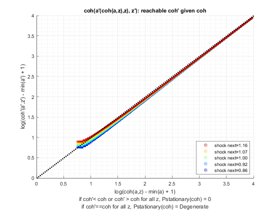
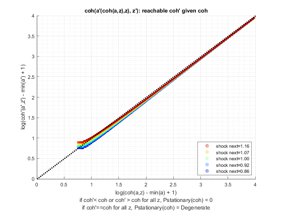
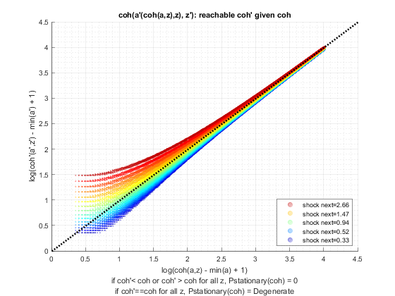
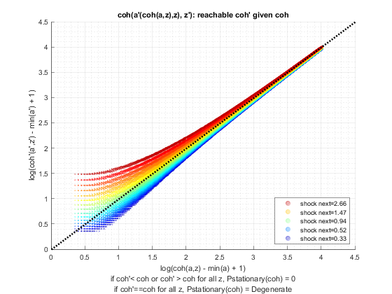

Test Shock Persistence and Variance (Savings Distribution)
back to Fan's Dynamic Assets Repository Table of Content.
Testing the ff_az_ds_vecsv program for solving the savings only dynamic programming problem.
defaults in ffs_az_set_default_param.m are:
- param_map('fl_z_rho') = 0.8;
- param_map('fl_z_sig') = 0.2;
here test three levels of persistence:
- iid shocks
- 0.50 persistence
- 0.99 persistence
for each shock, thest at these standard deviations of the log normal shock:
- 0.05
- 0.10
- 0.30
@seealso
- PREFERENCE: savings only quick vs benchmark testing: fsi_az_ds_vecsv_pref
- SHOCK: savings only asset grid count testing: fsi_az_ds_vecsv_shock
Contents
Set Shared Parameters
close all; clear all; ar_fl_z_rho = [0.0, 0.50, 0.99]; ar_fl_z_sig = [0.05, 0.10, 0.3]; it_a_n = 750; it_z_n = 15;
Simulate Model with schok persistence = 0.0, IID
for fl_z_sig = ar_fl_z_sig disp('xxxxxxxxxxxxxxxxxxxxxxxxxxx'); disp('xxxxxxxxxxxxxxxxxxxxxxxxxxx'); disp(['fl_z_rho = ' num2str(ar_fl_z_rho(1))]); disp(['fl_z_sig = ' num2str(fl_z_sig)]); disp('xxxxxxxxxxxxxxxxxxxxxxxxxxx'); disp('xxxxxxxxxxxxxxxxxxxxxxxxxxx'); disp(''); disp(''); disp(''); disp(''); % Call Default Parameters <https://fanwangecon.github.io/CodeDynaAsset/m_az/paramfunc/html/ffs_az_set_default_param.html ffs_az_set_default_param> bl_input_override = true; it_param_set = 9; [param_map, support_map] = ffs_az_set_default_param(it_param_set); % Simulation Accuracy param_map('it_a_n') = it_a_n; param_map('it_z_n') = it_z_n; param_map('fl_z_rho') = ar_fl_z_rho(1); param_map('fl_z_sig') = fl_z_sig; % Display Parameters support_map('bl_display') = false; support_map('bl_display_final') = false; support_map('bl_time') = true; support_map('bl_profile') = false; support_map('bl_graph_coh_t_coh') = true; % Call Grid Generator <https://fanwangecon.github.io/CodeDynaAsset/m_az/paramfunc/html/ffs_az_get_funcgrid.html ffs_az_get_funcgrid> [armt_map, func_map] = ffs_az_get_funcgrid(param_map, support_map, bl_input_override); % Call Dynamic Programming Problem <https://fanwangecon.github.io/CodeDynaAsset/m_az/solve/html/ff_az_vf_vecsv.html ff_az_vf_vecsv> result_map = ff_az_vf_vecsv(param_map, support_map, armt_map, func_map); % Call Distribution CProgram result_map = ff_az_ds_vecsv(param_map, support_map, armt_map, func_map, result_map, bl_input_override); % Snap snapnow; end % close all close all;
xxxxxxxxxxxxxxxxxxxxxxxxxxx
xxxxxxxxxxxxxxxxxxxxxxxxxxx
fl_z_rho = 0
fl_z_sig = 0.05
xxxxxxxxxxxxxxxxxxxxxxxxxxx
xxxxxxxxxxxxxxxxxxxxxxxxxxx
Elapsed time is 1.092859 seconds.
Warning: The shifted operator is close to singular or badly scaled. RCOND =
7.604831e-17. Consider using a different value for sigma.
Elapsed time is 0.180560 seconds.
"tb_prob_drv, Percentiles of Y, …" "cl_mt_pol_a"
percentiles cl_mt_pol_aPercentileValues fracOfSumHeldBelowThisPercentile
___________ ___________________________ ________________________________
0.1 0 0
1 0 0
5 0 0
10 0 0
15 0 0
20 0 0
25 0 0
35 0 0
50 0 0
65 0 0
75 0 0
80 0.066756 0.90431
85 0.066756 0.90431
90 0.066756 0.90431
95 0.066756 0.90431
99 0.066756 0.90431
99.9 0.13351 0.99568
"tb_prob_drv, Percentiles of Y, …" "cl_mt_pol_coh"
percentiles cl_mt_pol_cohPercentileValues fracOfSumHeldBelowThisPercentile
___________ _____________________________ ________________________________
0.1 1.1003 0.0018126
1 1.1485 0.018874
5 1.1734 0.048227
10 1.1988 0.10498
15 1.2248 0.19744
20 1.2248 0.19744
25 1.2513 0.32444
35 1.2672 0.33859
50 1.2932 0.49517
65 1.3197 0.65071
75 1.3344 0.74798
80 1.3633 0.84696
85 1.3633 0.84696
90 1.3928 0.9144
95 1.423 0.95626
99 1.4612 0.98844
99.9 1.5296 0.99897
"tb_prob_drv, Percentiles of Y, …" "cl_mt_pol_c"
percentiles cl_mt_pol_cPercentileValues fracOfSumHeldBelowThisPercentile
___________ ___________________________ ________________________________
0.1 1.1003 0.0018326
1 1.1485 0.019083
5 1.1734 0.048759
10 1.1988 0.10613
15 1.2248 0.19962
20 1.2248 0.19962
25 1.2513 0.32802
35 1.2672 0.34233
50 1.2932 0.50064
65 1.3061 0.68885
75 1.3197 0.75017
80 1.3344 0.88307
85 1.3344 0.88307
90 1.336 0.90744
95 1.3518 0.94688
99 1.387 0.98912
99.9 1.3945 0.99892
tb_outcomes_meansdperc: mean, sd, percentiles
mean sd coefofvar min max pYis0 pYisMINY pYisMAXY p0_1 p1 p5 p10 p15 p20 p25 p35 p50 p65 p75 p80 p85 p90 p95 p99 p99_9
________ ________ _________ ______ ______ _______ _________ __________ ______ ______ ______ ______ ______ ______ ______ ______ ______ ______ ______ ________ ________ ________ ________ ________ _______
cl_mt_pol_a 0.014137 0.028953 2.0481 0 48.064 0.79852 0.79852 1.4635e-35 0 0 0 0 0 0 0 0 0 0 0 0.066756 0.066756 0.066756 0.066756 0.066756 0.13351
cl_mt_pol_coh 1.2945 0.070889 0.054762 1.1003 52.735 0 0.0021324 1.4377e-35 1.1003 1.1485 1.1734 1.1988 1.2248 1.2248 1.2513 1.2672 1.2932 1.3197 1.3344 1.3633 1.3633 1.3928 1.423 1.4612 1.5296
cl_mt_pol_c 1.2804 0.053073 0.041452 1.1003 4.6923 0 0.0021324 1.0351e-35 1.1003 1.1485 1.1734 1.1988 1.2248 1.2248 1.2513 1.2672 1.2932 1.3061 1.3197 1.3344 1.3344 1.336 1.3518 1.387 1.3945
tb_outcomes_fracheld: fraction of asset/income/etc held by hh up to this percentile
fracByP0_1 fracByP1 fracByP5 fracByP10 fracByP15 fracByP20 fracByP25 fracByP35 fracByP50 fracByP65 fracByP75 fracByP80 fracByP85 fracByP90 fracByP95 fracByP99 fracByP99_9
__________ ________ ________ _________ _________ _________ _________ _________ _________ _________ _________ _________ _________ _________ _________ _________ ___________
cl_mt_pol_a 0 0 0 0 0 0 0 0 0 0 0 0.90431 0.90431 0.90431 0.90431 0.90431 0.99568
cl_mt_pol_coh 0.0018126 0.018874 0.048227 0.10498 0.19744 0.19744 0.32444 0.33859 0.49517 0.65071 0.74798 0.84696 0.84696 0.9144 0.95626 0.98844 0.99897
cl_mt_pol_c 0.0018326 0.019083 0.048759 0.10613 0.19962 0.19962 0.32802 0.34233 0.50064 0.68885 0.75017 0.88307 0.88307 0.90744 0.94688 0.98912 0.99892
 
 xxxxxxxxxxxxxxxxxxxxxxxxxxx
xxxxxxxxxxxxxxxxxxxxxxxxxxx
fl_z_rho = 0
fl_z_sig = 0.1
xxxxxxxxxxxxxxxxxxxxxxxxxxx
xxxxxxxxxxxxxxxxxxxxxxxxxxx
Elapsed time is 1.116158 seconds.
Warning: The shifted operator is close to singular or badly scaled. RCOND =
2.686277e-17. Consider using a different value for sigma.
Elapsed time is 0.083858 seconds.
"tb_prob_drv, Percentiles of Y, …" "cl_mt_pol_a"
percentiles cl_mt_pol_aPercentileValues fracOfSumHeldBelowThisPercentile
___________ ___________________________ ________________________________
0.1 0 0
1 0 0
5 0 0
10 0 0
15 0 0
20 0 0
25 0 0
35 0 0
50 0.066756 0.26849
65 0.066756 0.26849
75 0.13351 0.59461
80 0.13351 0.59461
85 0.13351 0.59461
90 0.20027 0.77871
95 0.26702 0.88081
99 0.33378 0.97176
99.9 0.46729 0.99606
"tb_prob_drv, Percentiles of Y, …" "cl_mt_pol_coh"
percentiles cl_mt_pol_cohPercentileValues fracOfSumHeldBelowThisPercentile
___________ _____________________________ ________________________________
0.1 0.94347 0.00078391
1 1.0279 0.0090164
5 1.1199 0.054488
10 1.1689 0.11089
15 1.1883 0.12986
20 1.2201 0.19537
25 1.2374 0.22748
35 1.2782 0.30954
50 1.342 0.48977
65 1.3977 0.62537
75 1.4559 0.74168
80 1.4662 0.77258
85 1.5167 0.83514
90 1.5622 0.87902
95 1.6463 0.94188
99 1.7832 0.9876
99.9 1.9207 0.99862
"tb_prob_drv, Percentiles of Y, …" "cl_mt_pol_c"
percentiles cl_mt_pol_cPercentileValues fracOfSumHeldBelowThisPercentile
___________ ___________________________ ________________________________
0.1 0.94347 0.00082761
1 1.0279 0.009519
5 1.1199 0.057524
10 1.1689 0.11707
15 1.1883 0.1371
20 1.2201 0.20626
25 1.2374 0.24016
35 1.2735 0.38858
50 1.2885 0.48562
65 1.3208 0.6297
75 1.3327 0.74788
80 1.3436 0.78951
85 1.3782 0.85466
90 1.3832 0.91218
95 1.3909 0.96034
99 1.42 0.98868
99.9 1.4566 0.99888
tb_outcomes_meansdperc: mean, sd, percentiles
mean sd coefofvar min max pYis0 pYisMINY pYisMAXY p0_1 p1 p5 p10 p15 p20 p25 p35 p50 p65 p75 p80 p85 p90 p95 p99 p99_9
________ ________ _________ _______ ______ _______ _________ __________ _______ ______ ______ ______ ______ ______ ______ ______ ________ ________ _______ _______ _______ _______ _______ _______ _______
cl_mt_pol_a 0.071441 0.083204 1.1647 0 48.264 0.42104 0.42104 1.1609e-35 0 0 0 0 0 0 0 0 0.066756 0.066756 0.13351 0.13351 0.13351 0.20027 0.26702 0.33378 0.46729
cl_mt_pol_coh 1.3532 0.15462 0.11426 0.94347 52.969 0 0.0011244 1.1609e-35 0.94347 1.0279 1.1199 1.1689 1.1883 1.2201 1.2374 1.2782 1.342 1.3977 1.4559 1.4662 1.5167 1.5622 1.6463 1.7832 1.9207
cl_mt_pol_c 1.2818 0.083202 0.064911 0.94347 4.7048 0 0.0011244 1.1609e-35 0.94347 1.0279 1.1199 1.1689 1.1883 1.2201 1.2374 1.2735 1.2885 1.3208 1.3327 1.3436 1.3782 1.3832 1.3909 1.42 1.4566
tb_outcomes_fracheld: fraction of asset/income/etc held by hh up to this percentile
fracByP0_1 fracByP1 fracByP5 fracByP10 fracByP15 fracByP20 fracByP25 fracByP35 fracByP50 fracByP65 fracByP75 fracByP80 fracByP85 fracByP90 fracByP95 fracByP99 fracByP99_9
__________ _________ ________ _________ _________ _________ _________ _________ _________ _________ _________ _________ _________ _________ _________ _________ ___________
cl_mt_pol_a 0 0 0 0 0 0 0 0 0.26849 0.26849 0.59461 0.59461 0.59461 0.77871 0.88081 0.97176 0.99606
cl_mt_pol_coh 0.00078391 0.0090164 0.054488 0.11089 0.12986 0.19537 0.22748 0.30954 0.48977 0.62537 0.74168 0.77258 0.83514 0.87902 0.94188 0.9876 0.99862
cl_mt_pol_c 0.00082761 0.009519 0.057524 0.11707 0.1371 0.20626 0.24016 0.38858 0.48562 0.6297 0.74788 0.78951 0.85466 0.91218 0.96034 0.98868 0.99888


xxxxxxxxxxxxxxxxxxxxxxxxxxx
xxxxxxxxxxxxxxxxxxxxxxxxxxx
fl_z_rho = 0
fl_z_sig = 0.3
xxxxxxxxxxxxxxxxxxxxxxxxxxx
xxxxxxxxxxxxxxxxxxxxxxxxxxx
Elapsed time is 1.239065 seconds.
Elapsed time is 0.174603 seconds.
"tb_prob_drv, Percentiles of Y, …" "cl_mt_pol_a"
percentiles cl_mt_pol_aPercentileValues fracOfSumHeldBelowThisPercentile
___________ ___________________________ ________________________________
0.1 0 0
1 0 0
5 0 0
10 0 0
15 0.066756 0.0077863
20 0.13351 0.025035
25 0.13351 0.025035
35 0.26702 0.086769
50 0.40053 0.16852
65 0.6008 0.3265
75 0.80107 0.48887
80 0.86782 0.54415
85 1.0013 0.63479
90 1.2016 0.74803
95 1.4019 0.83586
99 2.0027 0.96248
99.9 2.6702 0.99461
"tb_prob_drv, Percentiles of Y, …" "cl_mt_pol_coh"
percentiles cl_mt_pol_cohPercentileValues fracOfSumHeldBelowThisPercentile
___________ _____________________________ ________________________________
0.1 0.56551 0.00034388
1 0.73134 0.0040369
5 0.94579 0.02454
10 1.0826 0.055164
15 1.2124 0.084422
20 1.2879 0.12186
25 1.36 0.15631
35 1.5159 0.23533
50 1.7331 0.37464
65 1.9758 0.52313
75 2.1811 0.63838
80 2.3072 0.69823
85 2.4548 0.76225
90 2.6564 0.83167
95 2.962 0.90924
99 3.6034 0.97858
99.9 4.3872 0.99745
"tb_prob_drv, Percentiles of Y, …" "cl_mt_pol_c"
percentiles cl_mt_pol_cPercentileValues fracOfSumHeldBelowThisPercentile
___________ ___________________________ ________________________________
0.1 0.56551 0.00048296
1 0.73134 0.0056697
5 0.94579 0.034466
10 1.0826 0.077476
15 1.1456 0.11957
20 1.1564 0.16175
25 1.2157 0.21619
35 1.248 0.30403
50 1.3164 0.45539
65 1.3733 0.61285
75 1.4066 0.71507
80 1.4377 0.76743
85 1.4584 0.82589
90 1.4844 0.8812
95 1.5383 0.93926
99 1.6217 0.98736
99.9 1.7083 0.99868
tb_outcomes_meansdperc: mean, sd, percentiles
mean sd coefofvar min max pYis0 pYisMINY pYisMAXY p0_1 p1 p5 p10 p15 p20 p25 p35 p50 p65 p75 p80 p85 p90 p95 p99 p99_9
______ _______ _________ _______ ______ _______ __________ __________ _______ _______ _______ ______ ________ _______ _______ _______ _______ ______ _______ _______ ______ ______ ______ ______ ______
cl_mt_pol_a 0.523 0.46324 0.88575 0 49.533 0.12428 0.12428 6.8778e-35 0 0 0 0 0.066756 0.13351 0.13351 0.26702 0.40053 0.6008 0.80107 0.86782 1.0013 1.2016 1.4019 2.0027 2.6702
cl_mt_pol_coh 1.8161 0.61708 0.33979 0.49728 54.258 0 0.00033188 6.8778e-35 0.56551 0.73134 0.94579 1.0826 1.2124 1.2879 1.36 1.5159 1.7331 1.9758 2.1811 2.3072 2.4548 2.6564 2.962 3.6034 4.3872
cl_mt_pol_c 1.2931 0.17147 0.13261 0.49728 4.7257 0 0.00033188 6.8778e-35 0.56551 0.73134 0.94579 1.0826 1.1456 1.1564 1.2157 1.248 1.3164 1.3733 1.4066 1.4377 1.4584 1.4844 1.5383 1.6217 1.7083
tb_outcomes_fracheld: fraction of asset/income/etc held by hh up to this percentile
fracByP0_1 fracByP1 fracByP5 fracByP10 fracByP15 fracByP20 fracByP25 fracByP35 fracByP50 fracByP65 fracByP75 fracByP80 fracByP85 fracByP90 fracByP95 fracByP99 fracByP99_9
__________ _________ ________ _________ _________ _________ _________ _________ _________ _________ _________ _________ _________ _________ _________ _________ ___________
cl_mt_pol_a 0 0 0 0 0.0077863 0.025035 0.025035 0.086769 0.16852 0.3265 0.48887 0.54415 0.63479 0.74803 0.83586 0.96248 0.99461
cl_mt_pol_coh 0.00034388 0.0040369 0.02454 0.055164 0.084422 0.12186 0.15631 0.23533 0.37464 0.52313 0.63838 0.69823 0.76225 0.83167 0.90924 0.97858 0.99745
cl_mt_pol_c 0.00048296 0.0056697 0.034466 0.077476 0.11957 0.16175 0.21619 0.30403 0.45539 0.61285 0.71507 0.76743 0.82589 0.8812 0.93926 0.98736 0.99868

Simulate Model with schok persistence = 0.5
close all for fl_z_sig = ar_fl_z_sig disp('xxxxxxxxxxxxxxxxxxxxxxxxxxx'); disp('xxxxxxxxxxxxxxxxxxxxxxxxxxx'); disp(['fl_z_rho = ' num2str(ar_fl_z_rho(2))]); disp(['fl_z_sig = ' num2str(fl_z_sig)]); disp('xxxxxxxxxxxxxxxxxxxxxxxxxxx'); disp('xxxxxxxxxxxxxxxxxxxxxxxxxxx'); disp(''); disp(''); disp(''); disp(''); % Call Default Parameters <https://fanwangecon.github.io/CodeDynaAsset/m_az/paramfunc/html/ffs_az_set_default_param.html ffs_az_set_default_param> bl_input_override = true; it_param_set = 9; [param_map, support_map] = ffs_az_set_default_param(it_param_set); % Simulation Accuracy param_map('it_a_n') = it_a_n; param_map('it_z_n') = it_z_n; param_map('fl_z_rho') = ar_fl_z_rho(2); param_map('fl_z_sig') = fl_z_sig; % Display Parameters support_map('bl_display') = false; support_map('bl_display_final') = false; support_map('bl_time') = true; support_map('bl_profile') = false; support_map('bl_graph_coh_t_coh') = true; % Call Grid Generator <https://fanwangecon.github.io/CodeDynaAsset/m_az/paramfunc/html/ffs_az_get_funcgrid.html ffs_az_get_funcgrid> [armt_map, func_map] = ffs_az_get_funcgrid(param_map, support_map, bl_input_override); % Call Dynamic Programming Problem <https://fanwangecon.github.io/CodeDynaAsset/m_az/solve/html/ff_az_vf_vecsv.html ff_az_vf_vecsv> result_map = ff_az_vf_vecsv(param_map, support_map, armt_map, func_map); % Call Distribution CProgram result_map = ff_az_ds_vecsv(param_map, support_map, armt_map, func_map, result_map, bl_input_override); % Snap snapnow; end % close all close all;
xxxxxxxxxxxxxxxxxxxxxxxxxxx
xxxxxxxxxxxxxxxxxxxxxxxxxxx
fl_z_rho = 0.5
fl_z_sig = 0.05
xxxxxxxxxxxxxxxxxxxxxxxxxxx
xxxxxxxxxxxxxxxxxxxxxxxxxxx
Elapsed time is 1.038199 seconds.
Elapsed time is 0.071040 seconds.
"tb_prob_drv, Percentiles of Y, …" "cl_mt_pol_a"
percentiles cl_mt_pol_aPercentileValues fracOfSumHeldBelowThisPercentile
___________ ___________________________ ________________________________
0.1 0 0
1 0 0
5 0 0
10 0 0
15 0 0
20 0 0
25 0 0
35 0 0
50 0 0
65 0 0
75 0 0
80 0 0
85 0 0
90 0 0
95 0.066756 0.80207
99 0.066756 0.80207
99.9 0.13351 0.96497
"tb_prob_drv, Percentiles of Y, …" "cl_mt_pol_coh"
percentiles cl_mt_pol_cohPercentileValues fracOfSumHeldBelowThisPercentile
___________ _____________________________ ________________________________
0.1 1.0746 0.0022477
1 1.1291 0.023501
5 1.1574 0.059426
10 1.1864 0.12834
15 1.2161 0.23852
20 1.2161 0.23852
25 1.2161 0.23852
35 1.2466 0.38527
50 1.2778 0.54805
65 1.3099 0.69864
75 1.3427 0.81547
80 1.3427 0.81547
85 1.3763 0.89282
90 1.3763 0.89282
95 1.4111 0.94815
99 1.5132 0.98824
99.9 1.5879 0.99912
"tb_prob_drv, Percentiles of Y, …" "cl_mt_pol_c"
percentiles cl_mt_pol_cPercentileValues fracOfSumHeldBelowThisPercentile
___________ ___________________________ ________________________________
0.1 1.0746 0.0022548
1 1.1291 0.023576
5 1.1574 0.059614
10 1.1864 0.12875
15 1.2161 0.23928
20 1.2161 0.23928
25 1.2161 0.23928
35 1.2466 0.38649
50 1.2778 0.54979
65 1.3099 0.70097
75 1.3427 0.81844
80 1.3427 0.81844
85 1.3763 0.90577
90 1.3763 0.90577
95 1.4108 0.97654
99 1.4156 0.99
99.9 1.4544 0.99974
tb_outcomes_meansdperc: mean, sd, percentiles
mean sd coefofvar min max pYis0 pYisMINY pYisMAXY p0_1 p1 p5 p10 p15 p20 p25 p35 p50 p65 p75 p80 p85 p90 p95 p99 p99_9
_________ ________ _________ ______ ______ _______ ________ ___________ ______ ______ ______ ______ ______ ______ ______ ______ ______ ______ ______ ______ ______ ______ ________ ________ _______
cl_mt_pol_a 0.0040527 0.017834 4.4005 0 48.064 0.94567 0.94567 -5.1228e-35 0 0 0 0 0 0 0 0 0 0 0 0 0 0 0.066756 0.066756 0.13351
cl_mt_pol_coh 1.2842 0.080257 0.062498 1.0746 52.769 0 0.002686 -3.0562e-35 1.0746 1.1291 1.1574 1.1864 1.2161 1.2161 1.2161 1.2466 1.2778 1.3099 1.3427 1.3427 1.3763 1.3763 1.4111 1.5132 1.5879
cl_mt_pol_c 1.2801 0.072101 0.056324 1.0746 4.7054 0 0.002686 -3.0562e-35 1.0746 1.1291 1.1574 1.1864 1.2161 1.2161 1.2161 1.2466 1.2778 1.3099 1.3427 1.3427 1.3763 1.3763 1.4108 1.4156 1.4544
tb_outcomes_fracheld: fraction of asset/income/etc held by hh up to this percentile
fracByP0_1 fracByP1 fracByP5 fracByP10 fracByP15 fracByP20 fracByP25 fracByP35 fracByP50 fracByP65 fracByP75 fracByP80 fracByP85 fracByP90 fracByP95 fracByP99 fracByP99_9
__________ ________ ________ _________ _________ _________ _________ _________ _________ _________ _________ _________ _________ _________ _________ _________ ___________
cl_mt_pol_a 0 0 0 0 0 0 0 0 0 0 0 0 0 0 0.80207 0.80207 0.96497
cl_mt_pol_coh 0.0022477 0.023501 0.059426 0.12834 0.23852 0.23852 0.23852 0.38527 0.54805 0.69864 0.81547 0.81547 0.89282 0.89282 0.94815 0.98824 0.99912
cl_mt_pol_c 0.0022548 0.023576 0.059614 0.12875 0.23928 0.23928 0.23928 0.38649 0.54979 0.70097 0.81844 0.81844 0.90577 0.90577 0.97654 0.99 0.99974


xxxxxxxxxxxxxxxxxxxxxxxxxxx
xxxxxxxxxxxxxxxxxxxxxxxxxxx
fl_z_rho = 0.5
fl_z_sig = 0.1
xxxxxxxxxxxxxxxxxxxxxxxxxxx
xxxxxxxxxxxxxxxxxxxxxxxxxxx
Elapsed time is 1.085622 seconds.
Warning: The shifted operator is close to singular or badly scaled. RCOND =
2.562586e-18. Consider using a different value for sigma.
Elapsed time is 0.101565 seconds.
"tb_prob_drv, Percentiles of Y, …" "cl_mt_pol_a"
percentiles cl_mt_pol_aPercentileValues fracOfSumHeldBelowThisPercentile
___________ ___________________________ ________________________________
0.1 0 0
1 0 0
5 0 0
10 0 0
15 0 0
20 0 0
25 0 0
35 0 0
50 0 0
65 0.066756 0.21329
75 0.066756 0.21329
80 0.13351 0.374
85 0.20027 0.5215
90 0.20027 0.5215
95 0.33378 0.80186
99 0.53405 0.93883
99.9 0.73431 0.98985
"tb_prob_drv, Percentiles of Y, …" "cl_mt_pol_coh"
percentiles cl_mt_pol_cohPercentileValues fracOfSumHeldBelowThisPercentile
___________ _____________________________ ________________________________
0.1 0.89914 0.0016284
1 0.99269 0.016747
5 1.0431 0.04174
10 1.096 0.088513
15 1.1516 0.16155
20 1.1644 0.17174
25 1.21 0.25771
35 1.2714 0.36695
50 1.3359 0.47763
65 1.4043 0.62479
75 1.4727 0.7034
80 1.5405 0.75969
85 1.5497 0.81271
90 1.6283 0.87036
95 1.755 0.93342
99 2.0201 0.98444
99.9 2.3125 0.99834
"tb_prob_drv, Percentiles of Y, …" "cl_mt_pol_c"
percentiles cl_mt_pol_cPercentileValues fracOfSumHeldBelowThisPercentile
___________ ___________________________ ________________________________
0.1 0.89914 0.0017206
1 0.99269 0.017696
5 1.0431 0.044104
10 1.096 0.093527
15 1.1516 0.17071
20 1.1644 0.18151
25 1.21 0.27316
35 1.2714 0.39683
50 1.2784 0.47199
65 1.3375 0.65553
75 1.4053 0.75688
80 1.4076 0.78252
85 1.4098 0.84903
90 1.4131 0.88796
95 1.4297 0.94316
99 1.5065 0.98827
99.9 1.5697 0.99878
tb_outcomes_meansdperc: mean, sd, percentiles
mean sd coefofvar min max pYis0 pYisMINY pYisMAXY p0_1 p1 p5 p10 p15 p20 p25 p35 p50 p65 p75 p80 p85 p90 p95 p99 p99_9
________ _______ _________ _______ ______ _______ _________ ___________ _______ _______ ______ _____ ______ ______ ____ ______ ______ ________ ________ _______ _______ _______ _______ _______ _______
cl_mt_pol_a 0.072602 0.11439 1.5755 0 48.331 0.52906 0.52906 -2.7911e-37 0 0 0 0 0 0 0 0 0 0.066756 0.066756 0.13351 0.20027 0.20027 0.33378 0.53405 0.73431
cl_mt_pol_coh 1.3544 0.21733 0.16046 0.89914 53.048 0 0.0024529 -2.7911e-37 0.89914 0.99269 1.0431 1.096 1.1516 1.1644 1.21 1.2714 1.3359 1.4043 1.4727 1.5405 1.5497 1.6283 1.755 2.0201 2.3125
cl_mt_pol_c 1.2818 0.12208 0.095242 0.89914 4.7166 0 0.0024529 -2.7911e-37 0.89914 0.99269 1.0431 1.096 1.1516 1.1644 1.21 1.2714 1.2784 1.3375 1.4053 1.4076 1.4098 1.4131 1.4297 1.5065 1.5697
tb_outcomes_fracheld: fraction of asset/income/etc held by hh up to this percentile
fracByP0_1 fracByP1 fracByP5 fracByP10 fracByP15 fracByP20 fracByP25 fracByP35 fracByP50 fracByP65 fracByP75 fracByP80 fracByP85 fracByP90 fracByP95 fracByP99 fracByP99_9
__________ ________ ________ _________ _________ _________ _________ _________ _________ _________ _________ _________ _________ _________ _________ _________ ___________
cl_mt_pol_a 0 0 0 0 0 0 0 0 0 0.21329 0.21329 0.374 0.5215 0.5215 0.80186 0.93883 0.98985
cl_mt_pol_coh 0.0016284 0.016747 0.04174 0.088513 0.16155 0.17174 0.25771 0.36695 0.47763 0.62479 0.7034 0.75969 0.81271 0.87036 0.93342 0.98444 0.99834
cl_mt_pol_c 0.0017206 0.017696 0.044104 0.093527 0.17071 0.18151 0.27316 0.39683 0.47199 0.65553 0.75688 0.78252 0.84903 0.88796 0.94316 0.98827 0.99878

xxxxxxxxxxxxxxxxxxxxxxxxxxx
xxxxxxxxxxxxxxxxxxxxxxxxxxx
fl_z_rho = 0.5
fl_z_sig = 0.3
xxxxxxxxxxxxxxxxxxxxxxxxxxx
xxxxxxxxxxxxxxxxxxxxxxxxxxx
Elapsed time is 1.231568 seconds.
Elapsed time is 0.245228 seconds.
"tb_prob_drv, Percentiles of Y, …" "cl_mt_pol_a"
percentiles cl_mt_pol_aPercentileValues fracOfSumHeldBelowThisPercentile
___________ ___________________________ ________________________________
0.1 0 0
1 0 0
5 0 0
10 0 0
15 0.066756 0.0045843
20 0.13351 0.010543
25 0.20027 0.02369
35 0.40053 0.065893
50 0.66756 0.14472
65 1.0013 0.26542
75 1.3351 0.39409
80 1.6021 0.49136
85 1.8692 0.57807
90 2.2029 0.6749
95 2.8705 0.81488
99 4.1389 0.94686
99.9 5.8745 0.99292
"tb_prob_drv, Percentiles of Y, …" "cl_mt_pol_coh"
percentiles cl_mt_pol_cohPercentileValues fracOfSumHeldBelowThisPercentile
___________ _____________________________ ________________________________
0.1 0.42606 0.00020665
1 0.6311 0.0024661
5 0.83999 0.017305
10 0.9839 0.03637
15 1.1067 0.06193
20 1.2436 0.090951
25 1.374 0.11642
35 1.6025 0.18693
50 1.9572 0.30162
65 2.4277 0.45032
75 2.8342 0.56581
80 3.0846 0.63207
85 3.3941 0.70422
90 3.8234 0.78501
95 4.5448 0.87863
99 6.02 0.96944
99.9 7.9289 0.99615
"tb_prob_drv, Percentiles of Y, …" "cl_mt_pol_c"
percentiles cl_mt_pol_cPercentileValues fracOfSumHeldBelowThisPercentile
___________ ___________________________ ________________________________
0.1 0.42606 0.00035358
1 0.6311 0.0042196
5 0.83999 0.029975
10 0.96348 0.065019
15 1.0383 0.10478
20 1.1084 0.14448
25 1.1394 0.19096
35 1.2128 0.2768
50 1.334 0.42235
65 1.4206 0.58052
75 1.4931 0.69123
80 1.5182 0.74959
85 1.5782 0.80791
90 1.6092 0.86885
95 1.6943 0.93111
99 1.8658 0.98531
99.9 2.0417 0.9984
tb_outcomes_meansdperc: mean, sd, percentiles
mean sd coefofvar min max pYis0 pYisMINY pYisMAXY p0_1 p1 p5 p10 p15 p20 p25 p35 p50 p65 p75 p80 p85 p90 p95 p99 p99_9
_______ _______ _________ _______ ______ _______ _________ __________ _______ ______ _______ _______ ________ _______ _______ _______ _______ ______ ______ ______ ______ ______ ______ ______ ______
cl_mt_pol_a 0.92661 0.95046 1.0257 0 49.866 0.11184 0.11184 2.2935e-35 0 0 0 0 0.066756 0.13351 0.20027 0.40053 0.66756 1.0013 1.3351 1.6021 1.8692 2.2029 2.8705 4.1389 5.8745
cl_mt_pol_coh 2.2298 1.1815 0.52986 0.42606 54.655 0 0.0010815 2.2935e-35 0.42606 0.6311 0.83999 0.9839 1.1067 1.2436 1.374 1.6025 1.9572 2.4277 2.8342 3.0846 3.3941 3.8234 4.5448 6.02 7.9289
cl_mt_pol_c 1.3032 0.26073 0.20007 0.42606 4.7886 0 0.0010815 2.2935e-35 0.42606 0.6311 0.83999 0.96348 1.0383 1.1084 1.1394 1.2128 1.334 1.4206 1.4931 1.5182 1.5782 1.6092 1.6943 1.8658 2.0417
tb_outcomes_fracheld: fraction of asset/income/etc held by hh up to this percentile
fracByP0_1 fracByP1 fracByP5 fracByP10 fracByP15 fracByP20 fracByP25 fracByP35 fracByP50 fracByP65 fracByP75 fracByP80 fracByP85 fracByP90 fracByP95 fracByP99 fracByP99_9
__________ _________ ________ _________ _________ _________ _________ _________ _________ _________ _________ _________ _________ _________ _________ _________ ___________
cl_mt_pol_a 0 0 0 0 0.0045843 0.010543 0.02369 0.065893 0.14472 0.26542 0.39409 0.49136 0.57807 0.6749 0.81488 0.94686 0.99292
cl_mt_pol_coh 0.00020665 0.0024661 0.017305 0.03637 0.06193 0.090951 0.11642 0.18693 0.30162 0.45032 0.56581 0.63207 0.70422 0.78501 0.87863 0.96944 0.99615
cl_mt_pol_c 0.00035358 0.0042196 0.029975 0.065019 0.10478 0.14448 0.19096 0.2768 0.42235 0.58052 0.69123 0.74959 0.80791 0.86885 0.93111 0.98531 0.9984
 
 Simulate Model with schok persistence = 0.99 (very persistent)
close all for fl_z_sig = ar_fl_z_sig disp('xxxxxxxxxxxxxxxxxxxxxxxxxxx'); disp('xxxxxxxxxxxxxxxxxxxxxxxxxxx'); disp(['fl_z_rho = ' num2str(ar_fl_z_rho(3))]); disp(['fl_z_sig = ' num2str(fl_z_sig)]); disp('xxxxxxxxxxxxxxxxxxxxxxxxxxx'); disp('xxxxxxxxxxxxxxxxxxxxxxxxxxx'); disp(''); disp(''); disp(''); disp(''); % Call Default Parameters <https://fanwangecon.github.io/CodeDynaAsset/m_az/paramfunc/html/ffs_az_set_default_param.html ffs_az_set_default_param> bl_input_override = true; it_param_set = 9; [param_map, support_map] = ffs_az_set_default_param(it_param_set); % Simulation Accuracy param_map('it_a_n') = it_a_n; param_map('it_z_n') = it_z_n; param_map('fl_z_rho') = ar_fl_z_rho(3); param_map('fl_z_sig') = fl_z_sig; % Display Parameters support_map('bl_display') = false; support_map('bl_display_final') = false; support_map('bl_time') = true; support_map('bl_profile') = false; support_map('bl_graph_coh_t_coh') = true; % Call Grid Generator <https://fanwangecon.github.io/CodeDynaAsset/m_az/paramfunc/html/ffs_az_get_funcgrid.html ffs_az_get_funcgrid> [armt_map, func_map] = ffs_az_get_funcgrid(param_map, support_map, bl_input_override); % Call Dynamic Programming Problem <https://fanwangecon.github.io/CodeDynaAsset/m_az/solve/html/ff_az_vf_vecsv.html ff_az_vf_vecsv> result_map = ff_az_vf_vecsv(param_map, support_map, armt_map, func_map); % Call Distribution CProgram result_map = ff_az_ds_vecsv(param_map, support_map, armt_map, func_map, result_map, bl_input_override); % Snap snapnow; end % close all close all; clear all;
xxxxxxxxxxxxxxxxxxxxxxxxxxx
xxxxxxxxxxxxxxxxxxxxxxxxxxx
fl_z_rho = 0.99
fl_z_sig = 0.05
xxxxxxxxxxxxxxxxxxxxxxxxxxx
xxxxxxxxxxxxxxxxxxxxxxxxxxx
Elapsed time is 1.174262 seconds.
Warning: The shifted operator is close to singular or badly scaled. RCOND =
9.874869e-17. Consider using a different value for sigma.
Elapsed time is 0.056701 seconds.
"tb_prob_drv, Percentiles of Y, …" "cl_mt_pol_a"
percentiles cl_mt_pol_aPercentileValues fracOfSumHeldBelowThisPercentile
___________ ___________________________ ________________________________
0.1 0 0
1 0 0
5 0 0
10 0 0
15 0 0
20 0 0
25 0 0
35 0 0
50 0 0
65 0 0
75 0 0
80 0 0
85 0 0
90 0 0
95 0 0
99 0 0
99.9 0 0
"tb_prob_drv, Percentiles of Y, …" "cl_mt_pol_coh"
percentiles cl_mt_pol_cohPercentileValues fracOfSumHeldBelowThisPercentile
___________ _____________________________ ________________________________
0.1 0.40402 0.0024237
1 0.47029 0.0084997
5 0.54744 0.022035
10 0.63725 0.048831
15 0.74179 0.095974
20 0.86348 0.16968
25 0.86348 0.16968
35 1.0051 0.27209
50 1.17 0.39854
65 1.362 0.5373
75 1.5854 0.67262
80 1.5854 0.67262
85 1.8455 0.78991
90 2.1482 0.88024
95 2.5006 0.94207
99 2.9108 0.97967
99.9 3.3883 1
"tb_prob_drv, Percentiles of Y, …" "cl_mt_pol_c"
percentiles cl_mt_pol_cPercentileValues fracOfSumHeldBelowThisPercentile
___________ ___________________________ ________________________________
0.1 0.40402 0.0024237
1 0.47029 0.0084997
5 0.54744 0.022035
10 0.63725 0.048831
15 0.74179 0.095974
20 0.86348 0.16968
25 0.86348 0.16968
35 1.0051 0.27209
50 1.17 0.39854
65 1.362 0.5373
75 1.5854 0.67262
80 1.5854 0.67262
85 1.8455 0.78991
90 2.1482 0.88024
95 2.5006 0.94207
99 2.9108 0.97967
99.9 3.3883 1
tb_outcomes_meansdperc: mean, sd, percentiles
mean sd coefofvar min max pYis0 pYisMINY pYisMAXY p0_1 p1 p5 p10 p15 p20 p25 p35 p50 p65 p75 p80 p85 p90 p95 p99 p99_9
__________ ___________________ ___________________ _______ ______ _____ _________ ___________ _______ _______ _______ _______ _______ _______ _______ ______ ____ _____ ______ ______ ______ ______ ______ ______ ______
cl_mt_pol_a 1.7311e-32 0+4.5431e-16i 0+2.6244e+16i 0 48.264 1 1 9.4965e-37 0 0 0 0 0 0 0 0 0 0 0 0 0 0 0 0 0
cl_mt_pol_coh 1.2803 0.55946+0i 0.43697+0i 0.40402 54.638 0 0.0076808 -4.7938e-36 0.40402 0.47029 0.54744 0.63725 0.74179 0.86348 0.86348 1.0051 1.17 1.362 1.5854 1.5854 1.8455 2.1482 2.5006 2.9108 3.3883
cl_mt_pol_c 1.2803 0.55946+0i 0.43697+0i 0.40402 6.9748 0 0.0076808 -4.7938e-36 0.40402 0.47029 0.54744 0.63725 0.74179 0.86348 0.86348 1.0051 1.17 1.362 1.5854 1.5854 1.8455 2.1482 2.5006 2.9108 3.3883
tb_outcomes_fracheld: fraction of asset/income/etc held by hh up to this percentile
fracByP0_1 fracByP1 fracByP5 fracByP10 fracByP15 fracByP20 fracByP25 fracByP35 fracByP50 fracByP65 fracByP75 fracByP80 fracByP85 fracByP90 fracByP95 fracByP99 fracByP99_9
__________ _________ ________ _________ _________ _________ _________ _________ _________ _________ _________ _________ _________ _________ _________ _________ ___________
cl_mt_pol_a 0 0 0 0 0 0 0 0 0 0 0 0 0 0 0 0 0
cl_mt_pol_coh 0.0024237 0.0084997 0.022035 0.048831 0.095974 0.16968 0.16968 0.27209 0.39854 0.5373 0.67262 0.67262 0.78991 0.88024 0.94207 0.97967 1
cl_mt_pol_c 0.0024237 0.0084997 0.022035 0.048831 0.095974 0.16968 0.16968 0.27209 0.39854 0.5373 0.67262 0.67262 0.78991 0.88024 0.94207 0.97967 1


xxxxxxxxxxxxxxxxxxxxxxxxxxx
xxxxxxxxxxxxxxxxxxxxxxxxxxx
fl_z_rho = 0.99
fl_z_sig = 0.1
xxxxxxxxxxxxxxxxxxxxxxxxxxx
xxxxxxxxxxxxxxxxxxxxxxxxxxx
Elapsed time is 1.335604 seconds.
Elapsed time is 0.113824 seconds.
"tb_prob_drv, Percentiles of Y, …" "cl_mt_pol_a"
percentiles cl_mt_pol_aPercentileValues fracOfSumHeldBelowThisPercentile
___________ ___________________________ ________________________________
0.1 0 0
1 0 0
5 0 0
10 0 0
15 0 0
20 0 0
25 0 0
35 0 0
50 0 0
65 0 0
75 0 0
80 0 0
85 0 0
90 0 0
95 0 0
99 1.0681 0.11543
99.9 4.3391 0.83926
"tb_prob_drv, Percentiles of Y, …" "cl_mt_pol_coh"
percentiles cl_mt_pol_cohPercentileValues fracOfSumHeldBelowThisPercentile
___________ _____________________________ ________________________________
0.1 0.10708 0.00062753
1 0.14509 0.0024587
5 0.19659 0.0072073
10 0.26639 0.01815
15 0.36096 0.04056
20 0.4891 0.081345
25 0.4891 0.081345
35 0.66273 0.14731
50 0.898 0.24212
65 1.2168 0.36323
75 1.6488 0.50066
80 1.6488 0.50066
85 2.2341 0.63901
90 3.0272 0.76161
95 4.1019 0.85404
99 7.2003 0.92751
99.9 11.842 0.99094
"tb_prob_drv, Percentiles of Y, …" "cl_mt_pol_c"
percentiles cl_mt_pol_cPercentileValues fracOfSumHeldBelowThisPercentile
___________ ___________________________ ________________________________
0.1 0.10708 0.00064184
1 0.14509 0.0025148
5 0.19659 0.0073717
10 0.26639 0.018564
15 0.36096 0.041485
20 0.4891 0.0832
25 0.4891 0.0832
35 0.66273 0.15067
50 0.898 0.24764
65 1.2168 0.37151
75 1.6488 0.51208
80 1.6488 0.51208
85 2.2341 0.6536
90 3.0272 0.77904
95 4.1019 0.87382
99 5.7283 0.94517
99.9 7.5696 0.99436
tb_outcomes_meansdperc: mean, sd, percentiles
mean sd coefofvar min max pYis0 pYisMINY pYisMAXY p0_1 p1 p5 p10 p15 p20 p25 p35 p50 p65 p75 p80 p85 p90 p95 p99 p99_9
________ _______ _________ _______ ______ _______ _________ __________ _______ _______ _______ _______ _______ ______ ______ _______ _____ ______ ______ ______ ______ ______ ______ ______ ______
cl_mt_pol_a 0.029222 0.28726 9.8303 0 48.531 0.98247 0.98247 4.1746e-37 0 0 0 0 0 0 0 0 0 0 0 0 0 0 0 1.0681 4.3391
cl_mt_pol_coh 1.3106 1.357 1.0355 0.10708 58.781 0 0.0076808 -3.78e-36 0.10708 0.14509 0.19659 0.26639 0.36096 0.4891 0.4891 0.66273 0.898 1.2168 1.6488 1.6488 2.2341 3.0272 4.1019 7.2003 11.842
cl_mt_pol_c 1.2814 1.2002 0.93669 0.10708 10.317 0 0.0076808 -3.78e-36 0.10708 0.14509 0.19659 0.26639 0.36096 0.4891 0.4891 0.66273 0.898 1.2168 1.6488 1.6488 2.2341 3.0272 4.1019 5.7283 7.5696
tb_outcomes_fracheld: fraction of asset/income/etc held by hh up to this percentile
fracByP0_1 fracByP1 fracByP5 fracByP10 fracByP15 fracByP20 fracByP25 fracByP35 fracByP50 fracByP65 fracByP75 fracByP80 fracByP85 fracByP90 fracByP95 fracByP99 fracByP99_9
__________ _________ _________ _________ _________ _________ _________ _________ _________ _________ _________ _________ _________ _________ _________ _________ ___________
cl_mt_pol_a 0 0 0 0 0 0 0 0 0 0 0 0 0 0 0 0.11543 0.83926
cl_mt_pol_coh 0.00062753 0.0024587 0.0072073 0.01815 0.04056 0.081345 0.081345 0.14731 0.24212 0.36323 0.50066 0.50066 0.63901 0.76161 0.85404 0.92751 0.99094
cl_mt_pol_c 0.00064184 0.0025148 0.0073717 0.018564 0.041485 0.0832 0.0832 0.15067 0.24764 0.37151 0.51208 0.51208 0.6536 0.77904 0.87382 0.94517 0.99436

xxxxxxxxxxxxxxxxxxxxxxxxxxx
xxxxxxxxxxxxxxxxxxxxxxxxxxx
fl_z_rho = 0.99
fl_z_sig = 0.3
xxxxxxxxxxxxxxxxxxxxxxxxxxx
xxxxxxxxxxxxxxxxxxxxxxxxxxx
Elapsed time is 2.252337 seconds.
Elapsed time is 0.945521 seconds.
"tb_prob_drv, Percentiles of Y, …" "cl_mt_pol_a"
percentiles cl_mt_pol_aPercentileValues fracOfSumHeldBelowThisPercentile
___________ ___________________________ ________________________________
0.1 0.53405 0.034898
1 0.53405 0.034898
5 0.53405 0.034898
10 0.53405 0.034898
15 0.53405 0.034898
20 0.53405 0.034898
25 0.53405 0.034898
35 0.53405 0.034898
50 0.86782 0.042602
65 2.6035 0.08012
75 5.2069 0.1364
80 7.8772 0.18497
85 12.75 0.2624
90 22.029 0.38995
95 41.989 0.62755
99 50 1
99.9 50 1
"tb_prob_drv, Percentiles of Y, …" "cl_mt_pol_coh"
percentiles cl_mt_pol_cohPercentileValues fracOfSumHeldBelowThisPercentile
___________ _____________________________ ________________________________
0.1 0.54753 0.00039353
1 0.54773 0.0012413
5 0.54949 0.0056335
10 0.5526 0.009841
15 0.56033 0.015571
20 0.56033 0.015571
25 0.57958 0.022491
35 0.62747 0.029744
50 1.038 0.039778
65 2.9539 0.073307
75 5.9696 0.12648
80 8.9803 0.17259
85 14.5 0.24438
90 25.032 0.36421
95 47.762 0.58461
99 70.237 0.9054
99.9 98.487 1
"tb_prob_drv, Percentiles of Y, …" "cl_mt_pol_c"
percentiles cl_mt_pol_cPercentileValues fracOfSumHeldBelowThisPercentile
___________ ___________________________ ________________________________
0.1 0.013487 5.3545e-05
1 0.013689 0.00017058
5 0.015441 0.00086239
10 0.018552 0.0017632
15 0.018552 0.0017632
20 0.026289 0.0036019
25 0.026289 0.0036019
35 0.045539 0.0068825
50 0.16069 0.016305
65 0.37881 0.041913
75 0.69089 0.077474
80 1.1315 0.10915
85 1.6586 0.15547
90 2.9103 0.2337
95 6.3085 0.37616
99 20.237 0.74293
99.9 48.487 1
tb_outcomes_meansdperc: mean, sd, percentiles
mean sd coefofvar min max pYis0 pYisMINY pYisMAXY p0_1 p1 p5 p10 p15 p20 p25 p35 p50 p65 p75 p80 p85 p90 p95 p99 p99_9
______ ______ _________ __________ ______ ___________ ___________ _________ ________ ________ ________ ________ ________ ________ ________ ________ _______ _______ _______ ______ ______ ______ ______ ______ ______
cl_mt_pol_a 6.5359 12.238 1.8724 0 50 -2.8202e-33 -2.8202e-33 0.033532 0.53405 0.53405 0.53405 0.53405 0.53405 0.53405 0.53405 0.53405 0.86782 2.6035 5.2069 7.8772 12.75 22.029 41.989 50 50
cl_mt_pol_coh 7.9807 16.213 2.0315 0.00013575 98.487 0 -3.052e-34 0.0074934 0.54753 0.54773 0.54949 0.5526 0.56033 0.56033 0.57958 0.62747 1.038 2.9539 5.9696 8.9803 14.5 25.032 47.762 70.237 98.487
cl_mt_pol_c 1.4448 5.022 3.476 0.00013575 48.487 0 -3.052e-34 0.0074934 0.013487 0.013689 0.015441 0.018552 0.018552 0.026289 0.026289 0.045539 0.16069 0.37881 0.69089 1.1315 1.6586 2.9103 6.3085 20.237 48.487
tb_outcomes_fracheld: fraction of asset/income/etc held by hh up to this percentile
fracByP0_1 fracByP1 fracByP5 fracByP10 fracByP15 fracByP20 fracByP25 fracByP35 fracByP50 fracByP65 fracByP75 fracByP80 fracByP85 fracByP90 fracByP95 fracByP99 fracByP99_9
__________ __________ __________ _________ _________ _________ _________ _________ _________ _________ _________ _________ _________ _________ _________ _________ ___________
cl_mt_pol_a 0.034898 0.034898 0.034898 0.034898 0.034898 0.034898 0.034898 0.034898 0.042602 0.08012 0.1364 0.18497 0.2624 0.38995 0.62755 1 1
cl_mt_pol_coh 0.00039353 0.0012413 0.0056335 0.009841 0.015571 0.015571 0.022491 0.029744 0.039778 0.073307 0.12648 0.17259 0.24438 0.36421 0.58461 0.9054 1
cl_mt_pol_c 5.3545e-05 0.00017058 0.00086239 0.0017632 0.0017632 0.0036019 0.0036019 0.0068825 0.016305 0.041913 0.077474 0.10915 0.15547 0.2337 0.37616 0.74293 1